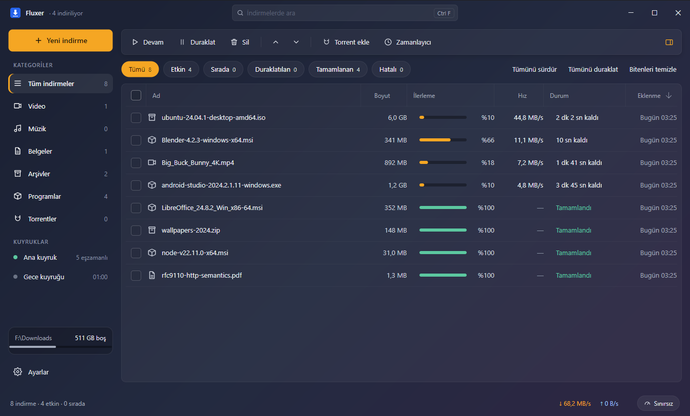
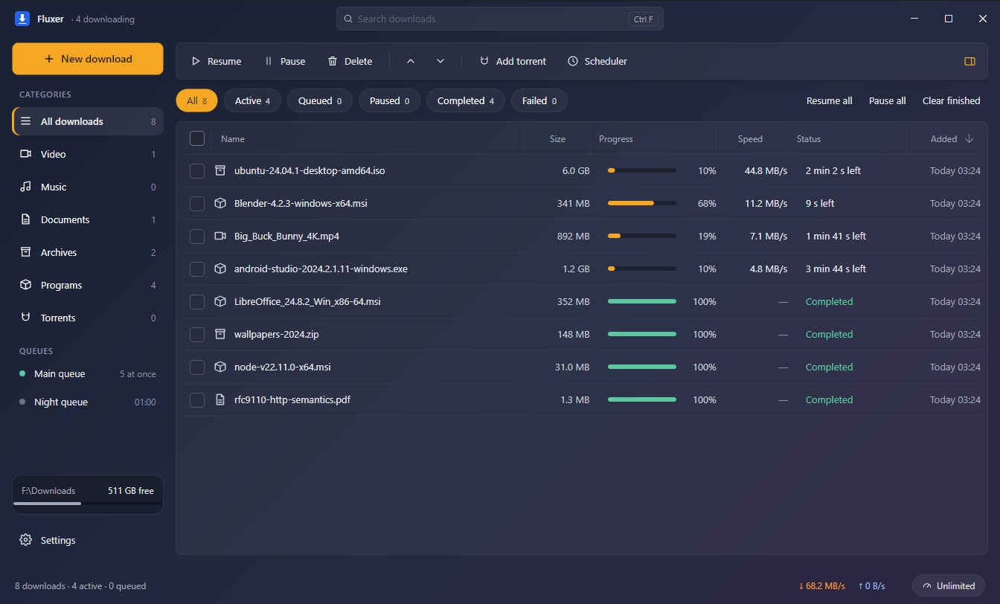
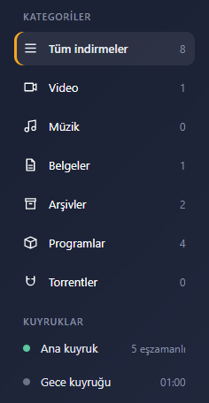
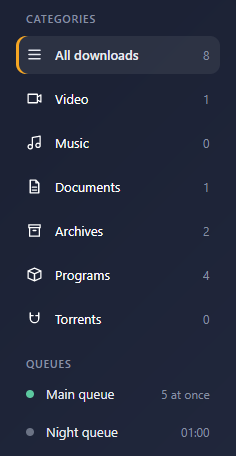
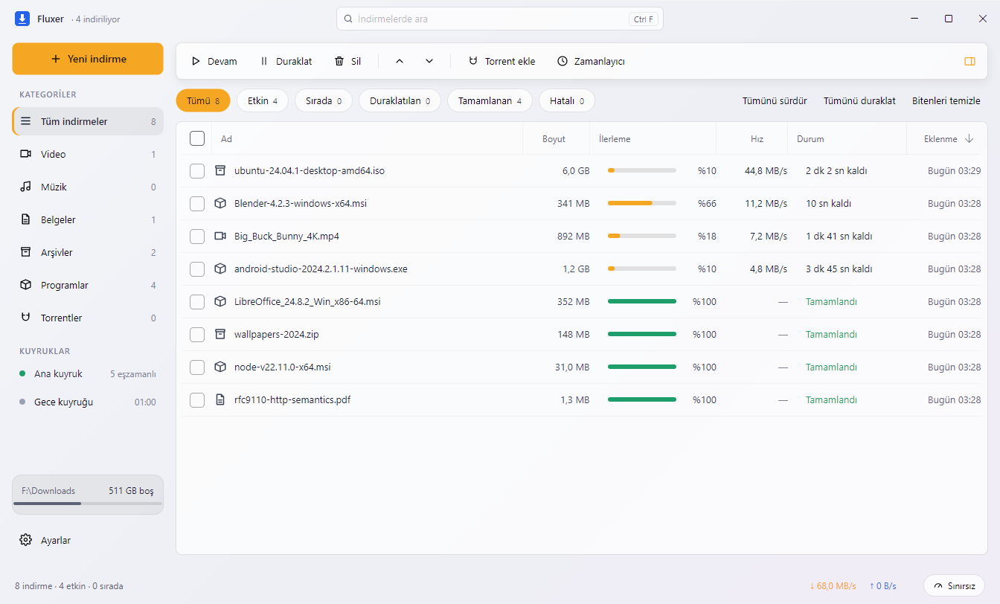
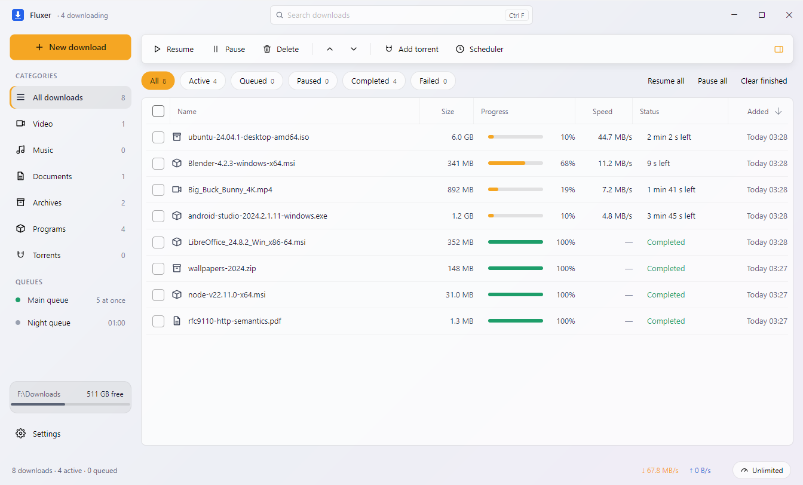

Büyük dosyalar, sekiz bağlantıdan birden.Big files, over eight connections at once.
Fluxer, Windows için bir indirme yöneticisi. Dosyayı parçalara bölüp aynı anda indirir, bağlantı kopunca kaldığı yerden sürdürür. Torrentler ve videolar da aynı listede.Fluxer is a download manager for Windows. It splits a file into parts, fetches them at the same time and picks up where it stopped when the connection drops. Torrents and videos go in the same list.
Windows 10 (1809+) ve 11, x64. Ücretsiz ve yönetici izni istemez.Windows 10 (1809+) and 11, x64. Free, and it doesn't need admin rights.


ÖzelliklerFeatures
HTTP, torrent ve video indirmeleri tek bir uygulamada. Tarayıcıdan gelen indirmeler de aynı listeye düşer.HTTP, torrent and video downloads in one app. Downloads from the browser land in the same list.
Parçalı indirmeSplit downloads
Dosya sekiz parçaya bölünür ve her parça kendi bağlantısından iner. İşini erken bitiren bağlantı, kalan en büyük parçanın yarısını devralır. Böylece indirmenin sonu tek bir yavaş bağlantıya kalmaz. Bilgisayar kapansa da ilerleme diske yazılır; sunucudaki dosya bu arada değiştiyse Fluxer bunu fark eder ve baştan başlatmayı önerir.The file is split into eight parts and each one comes down its own connection. A connection that finishes early takes over half of the largest part still left, so the end of the download doesn't hang on one slow connection. Progress is written to disk even if the computer shuts down, and if the file on the server changed in the meantime, Fluxer notices and offers to start over.
ubuntu-24.04.1-desktop-amd64.iso6,0 GB
0%tamamlandıdone
0,0 MB/shızspeed
8bağlantıconnections
Kategoriler ve kuyruklarCategories and queues
İndirmeler dosya türüne göre ayrılır. Ana kuyruk aynı anda kaç indirmenin çalışacağını belirler; gece kuyruğu seçtiğin saatte başlar, varsayılan olarak 01:00'de.Downloads are grouped by file type. The main queue decides how many run at once, and the night queue starts at the hour you pick, 01:00 by default.


Hız profilleriSpeed profiles
Haftalık bir plan kurarsan Fluxer gün içinde profiller arasında kendisi geçer.Set up a weekly schedule and Fluxer switches profiles during the day.
Süresi dolan linklerExpired links
Linkin süresi dolunca indirme bekler; sayfadan yenilediğinde devam eder. Aynı dosyanın başka adresleri bağlantıları paylaşır.When a link expires, the download waits until you refresh it from the page. Other addresses of the same file share the connections.
Açık ve koyu temaLight and dark themes
Fluxer Windows'un temasını izler ya da seçtiğin temada kalır. Arayüz Türkçe ve İngilizce.Fluxer follows the Windows theme or stays on the one you pick. The interface is in English and Turkish.
Karşılaştırmak için sürükle.Drag to compare.


TorrentTorrents
Magnet linkleri ve .torrent dosyaları; DHT, eş değişimi, UPnP. RSS beslemelerindeki yeni torrentler kendiliğinden eklenir.Magnet links and .torrent files with DHT, peer exchange and UPnP. New torrents from RSS feeds are added on their own.
VideoVideo
yt-dlp'nin desteklediği sitelerden indirir. Gereken araçlar ilk kullanımda indirilir ve SHA-256 ile doğrulanır.Downloads from sites yt-dlp supports. The tools it needs are fetched on first use and checked against SHA-256 sums.
Tarayıcı eklentisiBrowser extension
Chrome, Edge, Brave, Opera, Vivaldi ve Firefox. Alt'a basılı tıklarsan dosya tarayıcıda kalır.Chrome, Edge, Brave, Opera, Vivaldi and Firefox. Hold Alt while clicking to keep a file in the browser.
Antivirüs taramasıAntivirus scan
Biten dosyalar, tarayıcıların yaptığı gibi Windows üzerinden antivirüse gönderilir.Finished files go to your antivirus through Windows, the same way browsers do.
Kendini güncellerUpdates itself
Yeni sürüm arka planda iner, uygulamadan çıkarken kurulur.New versions download in the background and install when you quit.
chrome://extensions sayfasında Geliştirici modunu aç, "Paketlenmemiş öğe yükle" ile %LOCALAPPDATA%\Fluxer\current\extension klasörünü seç. Firefox'ta about:debugging sayfasını aç, "Geçici eklenti yükle"ye tıkla ve extension-firefox içindeki manifest.json dosyasını seç.In chrome://extensions turn on Developer mode, click "Load unpacked" and pick %LOCALAPPDATA%\Fluxer\current\extension. In Firefox, open about:debugging, click "Load Temporary Add-on" and pick manifest.json in extension-firefox.
Bir dosya indirDownload a file
Tarayıcıda başlattığın indirme Fluxer'a geçer. Linkleri doğrudan uygulamaya da yapıştırabilirsin.Downloads you start in the browser land in Fluxer. You can also paste links straight into the app.